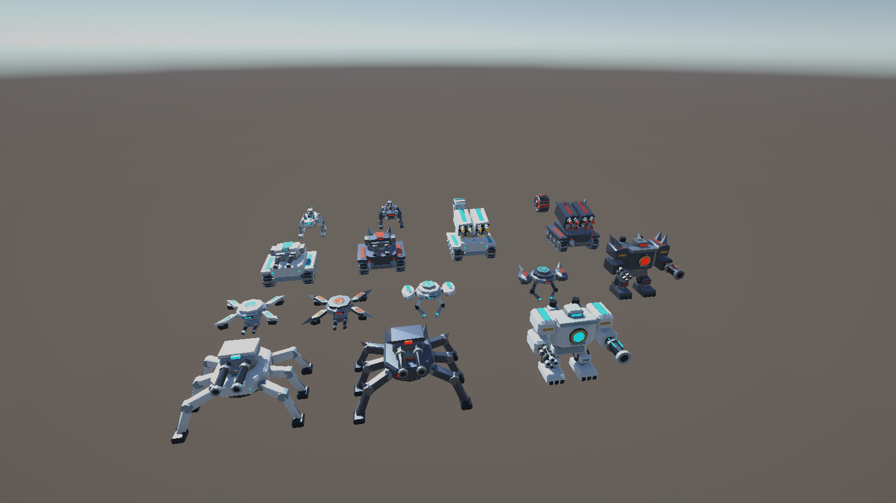

01 / Characters, rigs & animation
Stylized Sci-Fi
Classic Mech Legion.
A shared visual language across walkers, drones, tracked vehicles and support units. Mechanical silhouettes, colour accents and modular scene assets bring the lineup together.

ACTUAL UNITY DEMONSTRATION SCENESTYLIZED SCI-FI / MECHANICAL
A complete lineup.
A practical starting point.
16unit Prefabs
3configured LOD tiers
80named animation clips
Inside the collection
- 16 complete unit Prefabs with LODGroups, Generic mechanical rigs and animation controllers.
- Idle, Move, Attack, Hit and Death clips for each unit, shared across matching LOD models.
- 16 wreck Prefabs and four prop Prefabs, including projectile and scrap visuals.
- Native FBX models, shared materials, three PNG maps and vertex-colour detail.
- A lineup scene with animation and LOD preview controls, plus setup documentation.
Setup & integration
The current collection is prepared in Unity 6000.6.2f1. Materials use Unity glTFast 6.20.0; the URP demonstration uses URP 17.6.0. Built-in and URP material rendering have been checked. The package provides visual assets and baked animation; gameplay, damage and projectile systems are supplied by your project.
Contact & support
A little help with the next piece.
Questions about the assets, setup or included content?